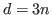
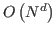
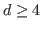
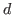
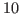

Solving the Schrödinger equation, the basic equation of quantum mechanics, is an active area of research spanning the fields of chemistry, physics, and applied mathematics. The main problem is that this equation is an equation in

space dimensions for a system consisting of
grid points. Therefore, it is not possible to solve partial differential equations in higher dimensions using full grids. Hence discretization grids are not applied to problems with dimension
.Sparse grids can be used to efficiently discretize second order elliptic differential equations on a

-dimensional cube. The first discretizations of PDEs on sparse grids using the Ritz-Galerkin approach were restricted to constant coefficients on cubical domains. Nevertheless, these original discretizations cannot easily be extended to obtain a computational efficient discretization of partial differential equations with variable coefficients. An extension to variable coefficients is essential for applying sparse grids to PDEs used for problems in the field of Physics and Engineering.A new sparse grid discretization for Helmholtz equations with a variable coefficient has been developed. To reduce the complexity of the sparse grid discretization matrix, we apply prewavelets and the semi-orthogonality property. Semi-orthogonality can be treated as a special kind of matrix compression. An efficient algorithm for matrix vector multiplication using a Ritz-Galerkin discretization is presented. This algorithm is based on standard 1-dimensional restrictions and prolongations, a simple prewavelet stencil, and the classical operator dependent stencil for multilinear finite elements. Simulation results show a convergence of the discretization according to the approximation properties of the finite element space. The linear equation system is solved by a preconditioned conjugate gradient method. The condition number of the stiffness matrix can be bounded below

using a standard diagonal preconditioner for a three dimensional test problem. Numerical simulation results are presented for a 3-dimensional problem on a curvilinear bounded domain and for a 6-dimensional problem with variable coefficients. Furthermore, simulation results for homogeneous and inhomogeneous boundary conditions are presented for block-structured grids.